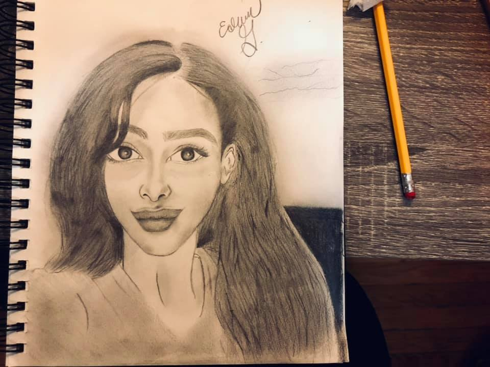
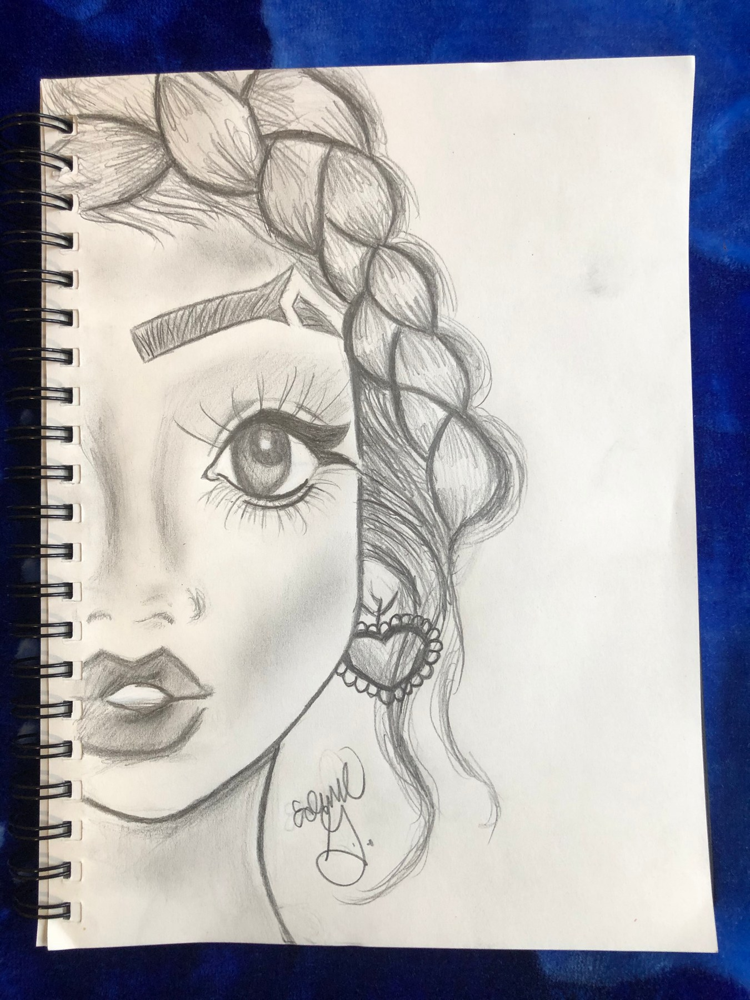
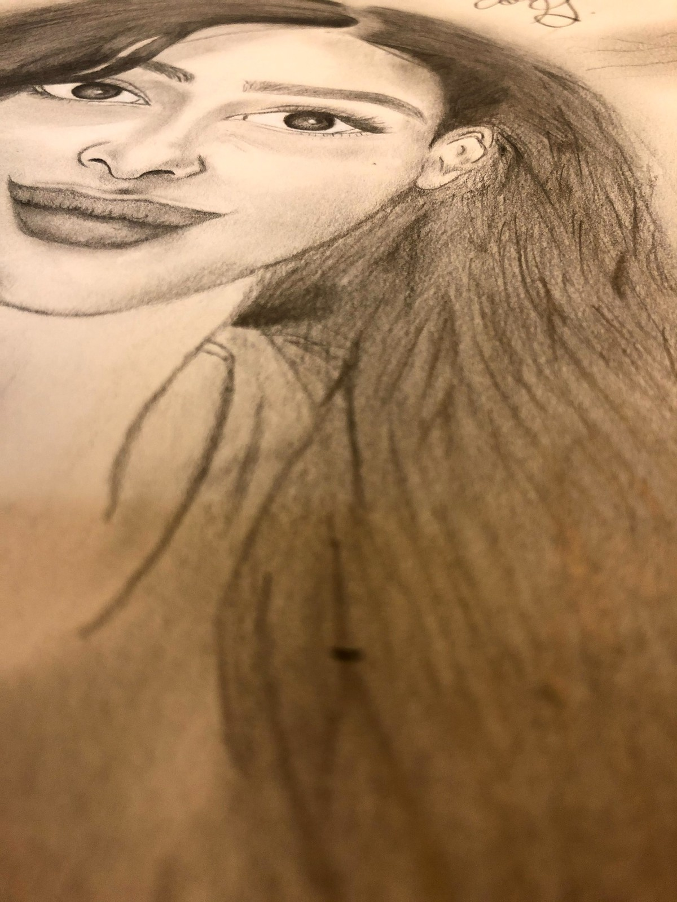
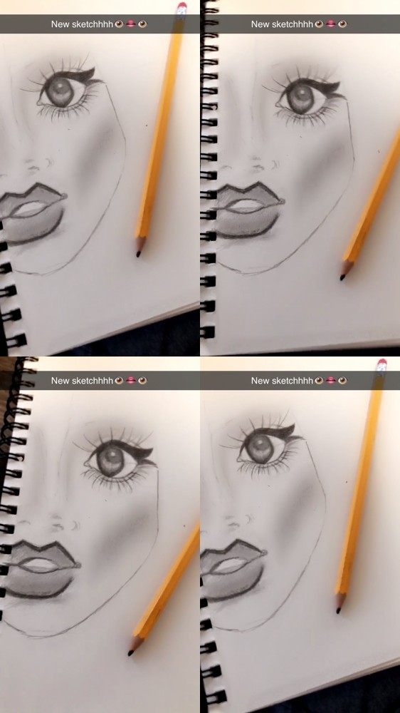
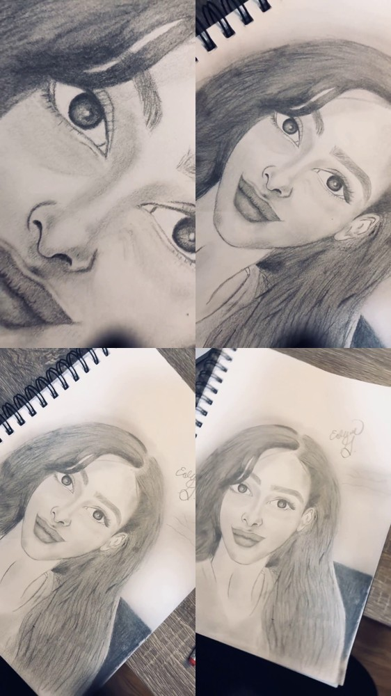

Production
Scheduling, tracking, documentation, follow-up, and clear communication across moving priorities.
Creative Production • Storytelling • Visual Development
I’m a creative storyteller and project coordinator building a career in animation production. I love the spark of a new idea, and I also love the behind-the-scenes work that helps a team turn that idea into something real.

What pulls me toward animation
The part I love most is the beginning, when a character, scene, or world is still only an idea. I naturally start imagining what it could become, how it should feel, and what pieces need to come together to make it real.
What I bring
Scheduling, tracking, documentation, follow-up, and clear communication across moving priorities.
Characters, original concepts, emotional beats, themes, and ideas rooted in real human experiences.
Drawing, voice, acting, creative coding, and experimenting with how a story can be seen and felt.
The production side
My professional background taught me how to organize information, communicate changes, track what matters, and keep work moving across teams.
Administrative Operations Coordinator • 2026–Present
Software Engineering / Project Support • Remote • 2021–2024
Scratch Programming Instructor • 2026
How I work
What is the goal, deadline, owner, and next decision?
Turn scattered details into a clear list, schedule, or tracker.
Watch dependencies, missing details, changes, and handoffs.
Surface updates and blockers before they become surprises.
Confirm completion, document changes, and leave the project cleaner.
Story + original IP
Creator • Story & Character Development • Animated Project in Development
4TYPE is an original animation concept centered on identity, textured hair, beauty standards, social pressure, and belonging. It reflects the kind of character-driven storytelling I want to help bring to life: work rooted in real experiences that can become visually expressive and emotionally memorable.

What I like to develop

My creativity helps me understand what artists and storytellers are trying to protect, while my coordination background helps me organize the work around that vision.
Visual work


Voice + performance
Voice work, acting, and drawing all help me think about emotion, personality, timing, and how a character communicates beyond the page.
Sketch process
Let’s make something
I’m especially interested in Production Assistant, creative production, and development or story support roles where I can contribute immediately while learning the animation pipeline from the inside.